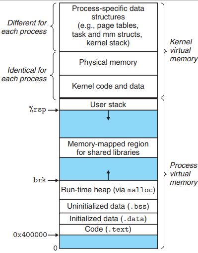

Virtual memory and malloc info
Posted on 日 14 6月 2020 in Journal
Virtual Memory
- 每个进程都有独立的虚拟地址空间，进程访问的虚拟地址并不是真正的物理地址；
- 虚拟地址可通过每个进程上的页表(在每个进程的内核虚拟地址空间)与物理地址进行映射，获得真正物理地址；
- 如果虚拟地址对应物理地址不在物理内存中，则产生缺页中断，真正分配物理地址，同时更新进程的页表；如果此时物理内存已耗尽，则根据内存替换算法淘汰部分页面至物理磁盘中。
Virtual Memory 由低地址到高地址分别为： 1、只读段：该部分空间只能读，不可写；(包括：代码段、rodata 段(C常量字符串和#define定义的常量) ) 2、数据段：保存全局变量、静态变量的空间； 3、堆 ：就是平时所说的动态内存， malloc/new 大部分都来源于此。其中堆顶的位置可通过函数 brk 和 sbrk 进行动态调整。 4、文件映射区域：如动态库、共享内存等映射物理空间的内存，一般是 mmap 函数所分配的虚拟地址空间。 5、栈：用于维护函数调用的上下文空间，一般为 8192k ，可通过 ulimit –s 查看。 6、内核虚拟空间：用户代码不可见的内存区域，由内核管理(页表就存放在内核虚拟空间)。

众多的分配器, tmalloc, jmalloc 以及glibc 中用的 pmalloc 都是为了高效
参见: https://computationstructures.org/lectures/vm/vm.html
struct mallinfo {
int arena; /* Non-mmapped space allocated (bytes) */
int ordblks; /* Number of free chunks */
int smblks; /* Number of free fastbin blocks */
int hblks; /* Number of mmapped regions */
int hblkhd; /* Space allocated in mmapped regions (bytes) */
int usmblks; /* Maximum total allocated space (bytes) */
int fsmblks; /* Space in freed fastbin blocks (bytes) */
int uordblks; /* Total allocated space (bytes) */
int fordblks; /* Total free space (bytes) */
int keepcost; /* Top-most, releasable space (bytes) */
};
-
arena The total amount of memory allocated by means other than mmap(2) (i.e., memory allocated on the heap). This figure includes both in-use blocks and blocks on the free list.
-
ordblks The number of ordinary (i.e., non-fastbin) free blocks.
-
smblks The number of fastbin free blocks (see mallopt(3)).
-
hblks The number of blocks currently allocated using mmap(2). (See the discussion of M_MMAP_THRESHOLD in mallopt(3).)
-
hblkhd The number of bytes in blocks currently allocated using mmap(2).
-
usmblks The "highwater mark" for allocated space—that is, the maxi‐ mum amount of space that was ever allocated. This field is maintained only in nonthreading environments.
-
fsmblks The total number of bytes in fastbin free blocks.
-
uordblks The total number of bytes used by in-use allocations.
-
fordblks The total number of bytes in free blocks.
-
keepcost The total amount of releasable free space at the top of the heap. This is the maximum number of bytes that could ide‐ ally (i.e., ignoring page alignment restrictions, and so on) be released by malloc_trim(3).
#include <unistd.h>
#include <stdlib.h>
#include <pthread.h>
#include <malloc.h>
#include <errno.h>
static size_t blockSize;
static int numThreads, numBlocks;
#define errExit(msg) do { perror(msg); exit(EXIT_FAILURE); \
} while (0)
static void * thread_func(void *arg)
{
int j;
int tn = (int) arg;
/* The multiplier '(2 + tn)' ensures that each thread (including
the main thread) allocates a different amount of memory */
for (j = 0; j < numBlocks; j++)
if (malloc(blockSize * (2 + tn)) == NULL)
errExit("malloc-thread");
sleep(100); /* Sleep until main thread terminates */
return NULL;
}
int main(int argc, char *argv[])
{
int j, tn, sleepTime;
pthread_t *thr;
if (argc < 4) {
fprintf(stderr,
"%s num-threads num-blocks block-size [sleep-time]\n",
argv[0]);
exit(EXIT_FAILURE);
}
numThreads = atoi(argv[1]);
numBlocks = atoi(argv[2]);
blockSize = atoi(argv[3]);
sleepTime = (argc > 4) ? atoi(argv[4]) : 0;
thr = calloc(numThreads, sizeof(pthread_t));
if (thr == NULL)
errExit("calloc");
printf("============ Before allocating blocks ============\n");
malloc_info(0, stdout);
/* Create threads that allocate different amounts of memory */
for (tn = 0; tn < numThreads; tn++) {
errno = pthread_create(&thr[tn], NULL, thread_func,
(void *) tn);
if (errno != 0)
errExit("pthread_create");
/* If we add a sleep interval after the start-up of each
thread, the threads likely won't contend for malloc
mutexes, and therefore additional arenas won't be
allocated (see malloc(3)). */
if (sleepTime > 0)
sleep(sleepTime);
}
/* The main thread also allocates some memory */
for (j = 0; j < numBlocks; j++)
if (malloc(blockSize) == NULL)
errExit("malloc");
sleep(2); /* Give all threads a chance to
complete allocations */
printf("\n============ After allocating blocks ============\n");
malloc_info(0, stdout);
exit(EXIT_SUCCESS);
}
输出如下
# ./mallocinfo 2 10 15 10
============ Before allocating blocks ============
<malloc version="1">
<heap nr="0">
<sizes>
</sizes>
<total type="fast" count="0" size="0"/>
<total type="rest" count="0" size="0"/>
<system type="current" size="135168"/>
<system type="max" size="135168"/>
<aspace type="total" size="135168"/>
<aspace type="mprotect" size="135168"/>
</heap>
<total type="fast" count="0" size="0"/>
<total type="rest" count="0" size="0"/>
<total type="mmap" count="0" size="0"/>
<system type="current" size="135168"/>
<system type="max" size="135168"/>
<aspace type="total" size="135168"/>
<aspace type="mprotect" size="135168"/>
</malloc>
============ After allocating blocks ============
<malloc version="1">
<heap nr="0">
<sizes>
</sizes>
<total type="fast" count="0" size="0"/>
<total type="rest" count="0" size="0"/>
<system type="current" size="135168"/>
<system type="max" size="135168"/>
<aspace type="total" size="135168"/>
<aspace type="mprotect" size="135168"/>
</heap>
<heap nr="1">
<sizes>
</sizes>
<total type="fast" count="0" size="0"/>
<total type="rest" count="0" size="0"/>
<system type="current" size="135168"/>
<system type="max" size="135168"/>
<aspace type="total" size="135168"/>
<aspace type="mprotect" size="135168"/>
</heap>
<heap nr="2">
<sizes>
</sizes>
<total type="fast" count="0" size="0"/>
<total type="rest" count="0" size="0"/>
<system type="current" size="135168"/>
<system type="max" size="135168"/>
<aspace type="total" size="135168"/>
<aspace type="mprotect" size="135168"/>
</heap>
<total type="fast" count="0" size="0"/>
<total type="rest" count="0" size="0"/>
<total type="mmap" count="0" size="0"/>
<system type="current" size="405504"/>
<system type="max" size="405504"/>
<aspace type="total" size="405504"/>
<aspace type="mprotect" size="405504"/>
</malloc>